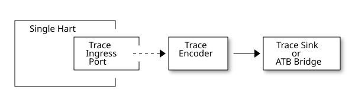
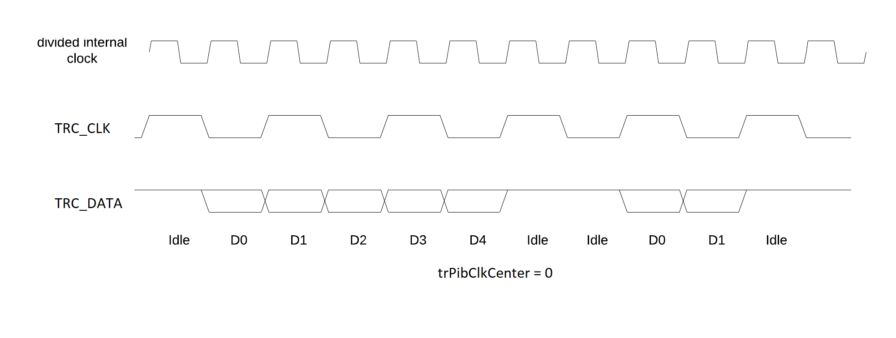
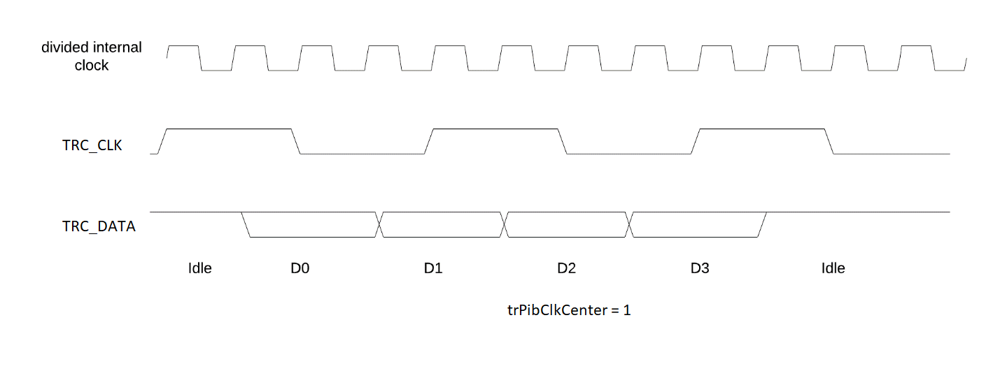
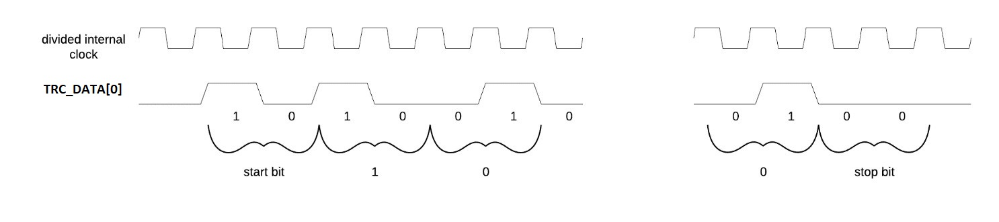
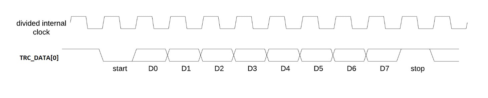

RISC-V Trace Control Interface Trace Control Interface Chapter 2. RISC-V Trace Control Interface Specification RISC-V Trace Control Interface Specification This document is in the Ratified state No changes are allowed. Any desired or needed changes can be the subject of a follow-on new extension. Ratified extensions are never revised. Change Log PDF generated on: 2026-01-29 17:01:41 UTC Version 1.0 (Ratified) 2024-11-21 Ratified state (concent identical as in 1.0_rc51 PDF) Copyright and license information This specification is licensed under the Creative Commons Attribution 4.0 International License (CC-BY 4.0). The full license text is available at creativecommons.org/licenses/by/4.0/ Copyright 2019-2024 by RISC-V International. Contributors Key contributors to RISC-V Trace Control Interface specification in alphabetical order: Bruce Ableidinger (SiFive) ⇒ Initial SiFive donation, reviews Robert Chyla (IAR, SiFive, MIPS) ⇒ Most topics, editing, publishing Ernie Edgar (SiFive) ⇒ Initial SiFive donation, reviews Jay Gamoneda (NXP) ⇒ Reviews, editing and updating after ARC review Markus Goehrle (Lauterbach) ⇒ Reviews, updates Iain Robertson (UltraSoC, Siemens) ⇒ E-Trace compatibility, filtering chapter, reviews Ved Shanbhogue (Rivos) ⇒ Detailed Architecture Review Committee notes Nino Vidovic (Segger) ⇒ Reviews 1. Introduction This document presents a standardized control interface for RISC-V trace infrastructure (such as trace encoders, trace funnels, trace sinks, …) for the Efficient Trace for RISC-V Version 2.0 Specification and for the RISC-V N-Trace (Nexus-based Trace) Specification Version 1.0.0. Standardized control interface allows trace control software development tools to be used interchangeably with any RISC-V device implementing processor and/or data trace. Instruction Trace is a system that collects a history of processor execution, along with other events. The trace system may be set up and controlled using a register-based interface. Hart execution activity appears on the Ingress Port and feeds into a Trace Encoder where it is compressed and formatted into trace messages. The Trace Encoder transmits trace messages to a Trace Sink. In multi-core systems, each hart has its own Trace Encoder, and typically all will connect to a Trace Funnel that aggregates the trace data from multiple sources and sends the data to a single destination. This specification does not define the hardware interconnection between the hart and Trace Encoder, as this is defined in the Efficient Trace for RISC-V Specification Version 2.0. This document also does not define the hardware interconnection between the Trace Encoder and Trace Funnel, or between the Trace Encoder/Funnel and Trace Sink. This specification allows a wide range of implementations including low-gate-count minimal instruction trace and systems with only instrumentation trace. Implementation choices include whether to support instruction trace, data trace, instrumentation trace, timestamps, external triggers, various trace sink types, and various optimization tradeoffs between gate count, features, and bandwidth requirements. 1.1. Glossary Trace Encoder (TE for short) - Hardware module that accepts execution information from a hart and generates a stream of trace messages/packets. Trace Message/Packet - Depending on protocol different names can be used, but it means the same. It is considered as a continuous sequence of (usually bytes) describing program and/or data flow and other events. Trace Funnel - Hardware module that combines trace streams from multiple trace sources (Trace Encoders and/or other Trace Funnels) into a single output stream of trace messages/packets. Trace Sink - Hardware module that accepts a stream of trace messages/packets and records them into the memory or forwards them onward in some format. Trace Decoder - Software program that takes a recorded trace (from a Trace Sink) and produces a readable execution history. RO - Denotes read-only bit/field - it does not mean it will return the same value each time when read. RW - Denotes read-write bit/field - value being read may not be the same as what was written as some fields may change their values because of other reasons. RW1C - Denotes bit/field, which can be read but you must write 1 to clear it (writing 0 will be ignored). It is used for sticky status bits to assure that these are cleared by deliberate action (write 1). WARL - Denotes Write any, read legal bit/field/register. If a non-legal value is written, the written value is converted to a value that is supported. That value should deterministically depend on the illegal written value and the architectural state of the trace sub-system. W1 - Denotes write-only bit, which performs an action when 1 is written to it. SD - Reset value of a field/register is system dependent - these fields should always have the same values at trace component reset. In many cases this may be the only value supported. Undef - This field/register may not reset. Trace tool must write correct value before enabling the trace component. ATB - Advanced Trace Bus, a protocol described in ARM document AMBA ATB Protocol Specification. This is one of alternative methods to send the trace (in addition to native Trace Sinks defined in this specification). PIB - Pin Interface Block, a parallel or serial off-chip trace port feeding into a trace probe. ?? - Used in names refer to identical fields/registers in different components. For example tr??Active may mean trTeActive or trTsActive. 2. Trace Protocols and Trace Control There are two standard RISC-V trace protocols which will utilize this RISC-V Trace Control Interface: RISC-V N-Trace (Nexus-based Trace) Specification Version 1.0 to be ratified together with this specification. Efficient Trace for RISC-V Specification Version 2.0 (ratified May 5-th 2022). This specification together with details provided in any of above documents should be considered as a complete guideline for any standard RISC-V trace implementation. Trace is controlled by set of 32-bit memory-mapped registers. Not all trace protocols and components must support all registers, bits, fields and options. This document includes a chapter Minimal Implementation which describes the smallest possible set of registers and fields, but each message protocol supported by this standard must clarify the exact meaning of supported registers/fields and bits as some of them define. 3. Trace System Overview This section briefly describes features of the Trace Encoder and other trace components as background for understanding some of the control interface register fields. 3.1. Trace Encoder By monitoring the Ingress Port, the Trace Encoder determines when a program flow discontinuity has occurred and whether the discontinuity is inferable or non-inferable. An inferable discontinuity is one for which the Trace Decoder can statically determine the destination, such as a direct branch instruction in which the destination or offset is included in the opcode. Non-inferable discontinuities include all other types such as interrupts, exceptions, and indirect jump instructions. 3.1.1. Branch Trace Messaging Branch Trace Messaging is the simplest, baseline form of instruction trace. Each program counter discontinuity results in one trace message, either a Direct or Indirect Branch Message. Linear instructions (or sequences of linear instructions) do not directly generate any trace messages/packets but overflow of counters (or exceptions) may generate corresponding packets/messages - these messages are infrequent and will not affect trace compression. Indirect Branch Messages normally contain a compressed address to reduce bandwidth. The Trace Encoder emits a Branch With Sync Message containing the complete instruction address under certain conditions. This message type is a variant of the Direct or Indirect Branch Message and includes a full address and a field indicating the reason for the Sync. 3.1.2. Branch History Messaging Both the Efficient Trace for RISC-V (E-Trace) Specification and the RISC-V N-Trace (Nexus-based Trace) specification define systems of messages intended to improve compression by reporting only whether conditional branches are taken by encoding each branch outcome in a single taken/not-taken bit. The destinations of non-inferable jumps and calls are reported as compressed addresses. Much better optimized compression can be achieved, but an encoder implementation will typically require more hardware. 3.1.3. Other Optimizations Several other optimizations are possible to improve trace compression. These are optional for any Trace Encoder and there should be a way to disable optimizations in case the trace system is used with code that does not follow recommended API rules. Examples of optimizations are a Return-address stack, Branch repetition, Statically inferable jump, and Branch prediction. 3.2. Trace Sinks The Trace Encoder transmits completed messages to a Trace Sink. This specification defines a number of different sink types, all optional, and allows an implementation to define other sink types. A Trace Encoder must have at least one sink or funnel attached to it. Trace messages/packets are sequences of bytes. In case of wider sink width, some padding/idle bytes (or additional formatting) may be added by the sink. N-Trace format allows any number of idle bytes between messages. 3.2.1. SRAM Sink The Trace Encoder packs trace messages into fixed-width trace words (usually bytes). These are then stored in a dedicated RAM, typically located on-chip, in a circular-buffer fashion. When the RAM has filled, it may optionally be stopped, or it may wrap and overwrite earlier trace data. 3.2.2. System Memory Sink The Trace Encoder packs trace messages into fixed-width trace words (usually bytes). These are then stored in a range of system memory reserved for trace using a DMA-type bus controller in a circular-buffer fashion. When the memory range has been filled, it may optionally be stopped, or it may wrap and overwrite earlier trace data. This type of sink may also be used to transmit trace off-chip through, for example, a PCIe or USB port. 3.2.3. PIB Sink The Trace Encoder sends trace messages to the PIB Sink. Each message is transmitted off-chip (as sequence of bytes) using a specific protocol described later. 3.3. ATB Bridge The ATB Bridge allows sending RISC-V trace to Arm CoreSight infrastructure (instead of RISC-V compliant sink defined in this document) as an ATB initiator. ATB Bridge is not needed for RISC-V only systems. ATB width is byte aligned (8, 16, 32, 64, 128) which allows transport of trace messages/packets defined as sequence of bytes. 3.4. Trace Funnel The Trace Encoder may send trace messages to a Trace Funnel. The Funnel aggregates the trace from each of its inputs (either RISC-V Trace Encoder or another Trace Funnel) and sends the combined trace stream to its designated Trace Sink or ATB Bridge, which is one or more of the sink types above. It is assumed that each input to the funnel (Trace Encoder or another Trace Funnel) has a unique message source ID defined (trTeSrcID field in the trTeControl register). 4. Trace Control Interface Overview The Trace Control interface consists of a set of 32-bit registers. The control interface can be used to set up and control a trace session, retrieve collected trace, and control any trace system components. 4.1. Trace Components Each Trace Component is controlled by a set of 32-bit registers occupying up to 4KB of an address space. Base address of each trace component must be aligned on the 4KB boundary. Each hart being traced must have its own separate Trace Encoder control component. A system with multiple harts must allow generating messages with a field indicating which hart is responsible for that message. This specification defines the following trace components (N in at the end of symbol name denotes 0-based index of the component) Table 1. Trace Components Component Name Component Type (value=symbol) Base Address (symbol #N) Trace Encoder 0x1=TRCOMP_ENCODER trBaseEncoderN Trace Funnel 0x8=TRCOMP_FUNNEL trBaseFunnelN Trace RAM Sink 0x9=TRCOMP_RAMSINK trBaseRamSinkN Trace PIB Sink 0xA=TRCOMP_PIBSINK trBasePibSinkN Trace ATB Bridge 0xE=TRCOMP_ATBBRIDGE trBaseAtbBridgeN This specification does NOT address the discovery of base addresses of trace components. These base addresses (symbols in above table) must be specified as part of trace tool configuration. Connections between different trace components must be also defined. Future versions of this specification may allow a single base address to be sufficient to access and discover all trace components in the system. 4.1.1. Connections Between Components Different components must be connected via internal busses and/or FIFO buffers. This specification does not define this interconnect logic, but the following rules must be followed: Each component sending a trace message/packet must assure the entire packet can be accepted by the destination component (or pushed into the FIFO buffer). Sending a partial packet is NEVER allowed as it will not be possible to process and decode such a trace. If a component cannot send an entire message/packet it must wait until it is possible to do so. Tracing is typically required to be non-intrusive, and if the Trace Encoder cannot keep up with the hart it should drop the packet and wait for the receiver to be ready. Once trace is allowed to resume it must issue an instruction trace synchronization message/packet so the decoder will be aware that some (unknown) amount of trace has been lost. It is advisable to drain the trace pipeline to some hysteresis level before resuming - otherwise a lot of short chunks of trace may be produced. Optionally the Trace Encoder may be configured to stall the hart to avoid trace data loss. To prevent trace overflows the following techniques can be used: Add a FIFO capable of holding several trace messages/packets to mitigate bursts of trace data. Use wider internal busses to provide more bandwidth. Make sure funnels and sinks provide the same or more bandwidth than encoders. Use triggers to create trace windows/ranges to limit amount of trace data - especially in multi-core configurations. Table 2. Allowed Connections Between Components Input Output Description Ingress Port Trace Encoder Ingress Port (from hart) providing raw trace to be encoded Trace Encoder Trace RAM Sink Single hart tracing to RAM buffer Trace Encoder Trace PIB Sink Single hart tracing via pins Trace Encoder Trace ATB Bridge Single hart tracing to Arm ATB infrastructure Trace Encoder Trace Funnel Sending trace from single hart to Trace Funnel (to be combined from other RISC-V trace) Trace Funnel Trace Funnel Sending combined trace from multiple harts to higher level Trace Funnel (to be combined from other RISC-V trace) Trace Funnel Trace RAM Sink Sending combined trace from multiple harts to RAM buffer Trace Funnel Trace PIB Sink Sending combined trace from multiple harts via pins Trace Funnel Trace ATB Bridge Sending combined trace from multiple harts to Arm ATB infrastructure Trace ATB Bridge Arm ATB bus Sending trace to ATB (to combine RISC-V trace with other Arm components on the system) Sending RISC-V trace to Arm CoreSight infrastructure is allowed (via ATB Bridge), but this specification does not specify how to transport trace data from other Arm CoreSight components in the system using RISC-V Trace sub-system. One of possible ways of doing so would be to create a custom trace component, configure it to encapsulate it as custom N-Trace trace messages and connect it as input to one of trace funnels. 4.1.2. Example Component Connection Diagrams  Figure 1. Simplest trace: Single Hart, Trace Encoder and Trace Sink/Bridge Figure 2. Multi-hart trace: Three harts, three Encoders, single Funnel and single Sink/Bridge Figure 3. Multi-cluster trace: two three-hart clusters with top-level Funnel and Sink/Bridge Figure 4. Local RAM Sink: Three-hart cluster plus extra hart with own RAM Sink (in SRAM mode) Trace data from Trace Encoder #4 may be combined with trace from other 3 Trace Encoders. But it may be also sent to dedicated Trace RAM Sink - in such a case corresponding input to Trace Funnel (top) should be disabled. 4.2. Accessing Trace Control Registers For the access method to the trace control registers, it makes a difference whether these registers shall be accessed by an external debug/trace tool, or by an internal debugger running on the chip. Trace control register access by an external debugger (this is the most common use case): External debuggers must be able to access all trace control registers independent of whether the traced harts are running or halted. That is why for external debuggers, the recommended access method for memory-mapped control registers is memory accesses through the RISC-V debug module using SBA (System Bus Access) as defined in the RISC-V Debug Specification. Trace control register access by an internal debugger: Through loads and stores performed by one or more harts in the system. Mapping the control interface into physical memory accessible from a hart allows that hart to manage a trace session independently from an external debugger. A hart may act as an internal debugger or may act in cooperation with an external debugger. Two possible use models are collecting crash information in the field and modifying trace collection parameters during execution. If a system has physical memory protection (PMP), a range can be configured to restrict access to the trace system from hart(s). Additional control path(s) may also be implemented, such as extra JTAG registers or devices, a dedicated DMI debug bus or message-passing network. Such an access (which is NOT based on System Bus) may require custom implementation by trace probe vendors as this specification only mandates probe vendors to provide access via SBA commands. 4.3. Trace Component Register Map Each block of 32-bit registers (for each component) has the following layout: Table 3. Register Layout for Component Address Offset Register Name Compliance Description 0x000 tr??Control Required Main control register for this trace component 0x004 tr??Impl Required Trace Implementation information for this trace component 0x008 - 0x00F extra controls Optional Extra controls for this trace component (named differently) 0x010 - 0xDFF — Optional Additional registers (specific for the type of a component). All not used registers are reserved and should read as 0 and ignore writes. 0xE00 - 0xFFF — Optional Registers reserved for implementation/vendor specific details. May allow identification of components on a system bus. Each component has a tr??Active bit in the tr??Control register. Accesses to other registers are unspecified when the tr??Active bit is 0. Each trace component has a tr??Impl register (at address offset 0x4) allowing trace component version and trace component type to be identified. This register allows debug tools to confirm the component type and potentially adjust tool behavior by looking at component versions. Each component may have a different version. Initial version of this specification defines all components to specify component version as 1.0 (major=1, minor=0). Registers in the 4KB range that are not implemented are reserved and read as 0 and ignore writes. Most trace control registers are optional. Some WARL fields may be hard coded to any value (including 0). It allows different implementations to provide different functionality. Both N-Trace and E-Trace encoders are controlled by the same set of bits/fields in the same trTe??? registers - as almost every register, field, bit is optional this provides good flexibility in implementation. All other trace components are shared between different trace encoders (N-Trace and E-Trace). 4.3.1. Summary of Trace Encoder Registers Table 4. Trace Encoder Registers (trTe??, trTs??) Address Offset Register Name Compliance Description 0x000 trTeControl Required Trace Encoder control register 0x004 trTeImpl Required Trace Encoder implementation information 0x008 trTeInstFeatures Optional Extra instruction trace encoder features and trace source IDs 0x00C trTeInstFilters Optional Mask of filters to qualify an instruction trace Data trace control (trTeData??) 0x010 trTeDataControl Optional Data trace control and features 0x014 - 0x018 — Reserved Reserved for data trace related future standard extension 0x01C trTeDataFilters Optional Mask of filters to qualify data trace Reserved 0x020 - 0x03F — Reserved Reserved for future standard extension Timestamp control (trTs??) 0x040 trTsControl Optional Timestamp control register 0x044 — Reserved Reserved for future timestamp related standard extension 0x048 trTsCounterLow Optional Lower 32 bits of timestamp counter 0x04C trTsCounterHigh Optional Upper bits of timestamp counter Trigger control (trTeTrig??) 0x050 trTeTrigDbgControl Optional Debug Triggers control register 0x054 trTeTrigExtInControl Optional External Triggers Input control register 0x058 trTeTrigExtOutControl Optional External Triggers Output control register Reserved 0x060 - 0x3FF — Reserved Reserved for future standard extension Filters & comparators (trTeFilter??, trTeComp??) 0x400 - 0x5FF trTeFilter?? Optional Trace Encoder Filter Registers 0x600 - 0x7FF trTeComp?? Optional Trace Encoder Comparator Registers 4.3.2. Summary of Trace RAM Sink Registers Table 5. Trace RAM Sink Registers (trRam??) Address Offset Register Name Compliance Description 0x000 trRamControl Required RAM Sink control register 0x004 trRamImpl Required RAM Sink Implementation information 0x008 - 0x00F — Reserved Reserved for more control registers 0x010 trRamStartLow Required Lower 32 bits of start address of circular trace buffer 0x014 trRamStartHigh Optional Upper bits of start address of circular trace buffer 0x018 trRamLimitLow Required Lower 32 bits of end address of circular trace buffer 0x01C trRamLimitHigh Optional Upper bits of end address of circular trace buffer 0x020 trRamWPLow Required Lower 32 bits of current write location for trace data in circular buffer 0x024 trRamWPHigh Optional Upper bits of current write location for trace data in circular buffer 0x028 trRamRPLow Optional Lower 32 bits of access pointer for trace readback 0x02C trRamRPHigh Optional Upper bits of access pointer for trace readback 0x030 - 0x03F — Reserved Reserved for more control registers 0x040 trRamData Optional Read/write access to SRAM trace memory (32-bit data) 4.3.3. Summary of Trace PIB Sink Registers Table 6. Trace PIB Sink Registers (trPib??) Address Offset Register Name Compliance Description 0x000 trPibControl Required Trace PIB Sink control register 0x004 trPibImpl Required Trace PIB Sink Implementation information 4.3.4. Summary of Trace Funnel Registers Table 7. Trace Funnel Registers (trFunnel??, trTs??) Address Offset Register Name Compliance Description 0x000 trFunnelControl Required Trace Funnel control register 0x004 trFunnelImpl Required Trace Funnel Implementation information 0x008 trFunnelDisInput Optional Disable individual funnel inputs 0x00C - 0x03F — Reserved Reserved for more control registers Timestamp control (trTs??) 0x040 trTsControl Optional Timestamp control register 0x044 — Reserved Reserved for extra timestamp control 0x048 trTsCounterLow Optional Lower 32 bits of timestamp counter 0x04C trTsCounterHigh Optional Upper bits of timestamp counter Funnels may optionally be a source of timestamp and/or forward timestamp to Trace Encoders in the system. This way several Trace Encoders may share timestamp and trace from several harts may be time-correlated. 4.3.5. Summary of Trace ATB Bridge Registers Table 8. Trace ATB Bridge Registers (trAtbBridge??) Address Offset Register Name Compliance Description 0x000 trAtbBridgeControl Required Trace ATB Bridge control register 0x004 trAtbBridgeImpl Required Trace ATB Bridge Implementation information 5. Versioning of Components Each component has a tr??Impl register, which includes two 4-bit tr??VerMinor and tr??VerMajor fields. These fields are guaranteed to be present in all future revisions of a standard, so trace tools will be able to discover a component version and act accordingly. Value 0 as tr??VerMajor is NOT allowed (due to compatibility reasons). Different components may report different versions (as some components may be updated more often than others). The major version tr??VerMajor field is incremented when the modification breaks backward compatibility. The minor version tr??VerMinor field is incremented when the modification maintains backward compatibility (for example adding a new field) - for that reason software should always write 0 to reserved bits in registers. Version 15.x is reserved for non-compatible version encoding. Version n.15 should be used as experimental (in development) implementation. Software tools must report the version number as two decimal numbers major.minor - initial version of this specification is defined as 1.0. Trace software should handle versions as follows (let’s assume hypothetical version 2.3 was defined as current version in moment of release of trace software) 0.x ⇒ Reject as not supported or generate a warning and handle as pre-ratified/initial version 0. 2.3 ⇒ Accept silently. 2.2 ⇒ Accept silently (and trim features or not allow users to set newer features). 2.4 ⇒ Generate a warning but continue using 2.3 features. 2.15 ⇒ Generate an "experimental version" warning but continue using 2.3 features. 1.x ⇒ Generate a warning and continue or reject as an obsolete (referring to last debugger supporting this version). 3.x ⇒ Generate a fatal error that this future version is not compatible with existing software and possibly redirect to the tool update page. Displayed messages should report component name, component base address and current and supported version numbers. It is suggested to display the full hexadecimal value of tr??Impl register as it may aid in debugging of possibly incorrect/incompatible component configuration. 6. Trace Encoder Control Interface Many features of the Trace Encoder (TE for short) are optional. In most cases, optional features are enabled using a WARL (write any, read legal) register field. A debugger can determine if optional feature is present by writing to the register field and reading back the result. Table 9. Register: trTeControl: Trace Encoder Control Register (trBaseEncoder+0x000) Bit Field Description RW Reset 0 trTeActive Primary activate/reset bit for the TE. When 0, the TE may have clocks gated off or be powered down, and other register locations may be inaccessible. Hardware may take an arbitrarily long time to process power-up and power-down and will indicate completion when the read value of this bit matches what was written. See Reset and Discovery chapter for more details. RW 0 1 trTeEnable 1: Trace Encoder is enabled. Allows trTeInstTracing and trTeDataTracing to turn tracing on and off. Setting trTeEnable to 0 flushes any queued trace data to the sink or funnel attached to this encoder. This bit can be set to 1 only by direct writing to it. This write of 1 should be done after all other settings are done. See Enabling and Disabling chapter for more details. RW 0 2 trTeInstTracing 1: Instruction trace is being generated. Written from a trace tool (after a write to trTeEnable) or controlled by triggers. When trTeInstTracing=1, instruction trace data may be subject to additional filtering in some implementations (additional trTeInstMode settings). RW Undef 3 trTeEmpty Reads as 1 when all generated trace have been emitted. RO 1 6:4 trTeInstMode Instruction trace generation mode 0: Full Instruction trace is disabled, but other trace (data trace) may be emitted. 1-2: Protocol defined trace mode. 3: Baseline instruction trace (for example Branch Trace). 4-5: Protocol defined trace mode. 6: Optimized instruction trace (for example Branch History Trace). 7: Reserved for vendor-defined instruction trace mode. NOTE: When non-supported mode (different than 0) is set, it cannot revert to 0 but MUST revert to supported non-0 mode. WARL Undef 8:7 — Reserved — 0 9 trTeContext Enable sending trace messages/fields with scontext/mcontext values and/or privilege levels. WARL Undef 10 — Reserved — 0 11 trTeInstTrigEnable 1: Allows trTeInstTracing to be set or cleared by Trace-on and Trace-off signals generated by the corresponding trigger module. WARL Undef 12 trTeInstStallOrOverflow Set to 1 by hardware when trace buffer overflow (also known as trace lost) occurs, or when the TE requests a hart stall. Clears to 0 at TE reset or when the trace is enabled (trTeEnable set to 1). Write 1 to clear. RW1C Undef 13 trTeInstStallEna 0: If TE cannot send a message, the message is dropped. The protocol dependent overflow instruction trace synchronization message/packet is generated when the trace is restarted, so the decoder will know that trace is lost and must reset any internal decoder state. 1: If TE cannot send a message, the hart is stalled until it can. With this option execution of instructions by the hart may be intrusively affected, but in many cases it is acceptable. WARL Undef 14 — Reserved — 0 15 trTeInhibitSrc 0: Messages/packets generated by the trace encoder include a message source field if the source width held in trTeSrcBits is not 0. 1: Disable inclusion of source field in trace messages/packets. WARL Undef 17:16 trTeInstSyncMode Select the periodic instruction trace synchronization message/packet generation mechanism. At least one non-zero mechanism must be implemented. 0: Off 1: Count trace messages/packets 2: Count hart clock cycles 3: Count instruction 16-bit half-words Once the max value of periodic counter is reached, an instruction trace synchronization message/packet should be generated. WARL Undef 19:18 — Reserved — 0 23:20 trTeInstSyncMax The maximum interval (in units determined by trTeInstSyncMode) between instruction trace synchronization messages/packets. Generate synchronization when count reaches 2^(trTeInstSyncMax+4). If an instruction trace synchronization message/packet is generated for another reason, the internal counter should be reset. WARL Undef 26:24 trTeFormat Trace recording/protocol format: 0: Format defined by Efficient Trace for RISC-V (E-Trace) Specification 1: Format defined by RISC-V N-Trace (Nexus-based Trace) Specification 2-6: Reserved for future formats 7: Vendor-specific format WARL Undef 31:27 — Reserved — 0 Writing to this register while trace is enabled may unintentionally change a value of trTeInstTracing bit because that bit may dynamically change by triggers. Table 10. Register: trTeImpl: Trace Encoder Implementation Register (trBaseEncoder+0x004) Bit Field Description RW Reset 3:0 trTeVerMajor Trace Encoder Component Major Version. Value 1 means the component is compliant with this document. Value 0 means pre-ratified/initial version - see 'Pre-ratified/Initial Interface Version' chapter at the end. RO 1 7:4 trTeVerMinor Trace Encoder Component Minor Version. Value 0 means the component is compliant with this document. RO 0 11:8 trTeCompType Trace Encoder Component Type (Trace Encoder) RO 0x1 15:12 — Reserved for future versions of this standard — 0 19:16 trTeProtocolMajor Trace Protocol Major Version. As specified by specification governing trTeFormat. RO SD 23:20 trTeProtocolMinor Trace Protocol Minor Version. As specified by specification governing trTeFormat. RO SD 31:24 — Reserved for vendor specific implementation details — SD trTeProtocol?? fields are separated from trTeVer?? as we may have the same control interface, but protocol itself may be extended with new packets/ messages/ fields. Table 11. Register: trTeInstFeatures: Trace Instruction Features Register (trBaseEncoder+0x008) Bit Field Description RW Reset 0 trTeInstNoAddrDiff When set, trace messages/packets always carry a full address. WARL Undef 1 trTeInstNoTrapAddr When set, do not include trap handler address in trap messages/packets. WARL Undef 2 trTeInstEnSequentialJump When set, treat sequentially inferrable jumps as inferable PC discontinuities. WARL Undef 3 trTeInstEnImplicitReturn When set, treat returns as inferable PC discontinuities when returning from a recent call on a stack. Field trTeInstImplicitReturnMode below provides more details. WARL Undef 4 trTeInstEnBranchPrediction When set, Branch Predictor based compression is enabled. WARL Undef 5 trTeInstEnJumpTargetCache When set, Jump Target Cache based compression is enabled. WARL Undef 7:6 trTeInstImplicitReturnMode Defines how the decoder is handling stack of return addresses (if enabled by trTeInstEnImplicitReturn bit): 0: Implicit Return mode is not supported, or implementation is not reporting how it is implemented. 1: Simple level counting without the return address comparing. 2: Partial (LSB portion of return address) compare (smaller logic cost than 3 below, but in most cases adequate as chances to have an incorrect return address with same LSB bits is very slim). 3: Full address comparing (always assures skipped return addresses are the same as addresses deducted from call instruction). Implementation may take advantage of RAS (Return Address Stack) if implemented by the hart. WARL Undef 8 trTeInstEnRepeatedHistory Enable repeated branch history/map detection when set. WARL Undef 9 trTeInstEnAllJumps Enable emitting of trace message or add history/map bit for direct unconditional/inferable control flow changes (jumps or calls). Normally these instructions do not generate any trace as the decoder can determine the next instruction. Trace will not compress well but timestamp accuracy will be better - may be used when profiling loops. WARL Undef 10 trTeInstExtendAddrMSB When set, allow extended handing of MSB address bits. Encoding details are trace protocol dependent. WARL Undef 15:11 — Reserved for additional instruction trace control/status bits — 0 27:16 trTeSrcID Trace source ID assigned to this trace encoder. If trTeSrcBits is not 0 and trace source is not disabled by trTeInhibitSrc, then trace messages from this TE will all include a trace source field of trTeSrcBits bits and all messages from this TE will use this value as trace source field. WARL Undef 31:28 trTeSrcBits The number of bits in the trace source field (0..12), unless disabled by trTeInhibitSrc. Some trace protocols may require that this field is identical for all enabled trace encoders within the same trace stream. WARL Undef Applicability of different trTeInst?? fields for each trace encoding protocol is described in a document which defines the protocol (and not all fields are applicable to all protocols). Table 12. Register: trTeInstFilters: Trace Instruction Filters Register (trBaseEncoder+0x00C) Bit Field Description RW Reset 15:0 trTeInstFilters Determine which filters defined in Trace Encoder Filter Registers chapter qualify an instruction trace. If bit n is a 1 then instructions will be traced when filter n matches. If all bits are 0, all instructions are traced. WARL Undef 31:16 — Reserved — 0 Table 13. Register: trTeDataControl: Data Trace Control Register (trBaseEncoder+0x010) Bit Field Description RW Reset 0 trTeDataImplemented Read as 1 if data trace is implemented. RO SD 1 trTeDataTracing 1: Data trace is being generated. Written from a trace tool or controlled by triggers. When trTeDataTracing=1, data trace may be subject to additional filtering in some implementations. WARL Undef 2 trTeDataTrigEnable Global enable/disable for data trace triggers WARL Undef 3 trTeDataStallOrOverflow Set to 1 by hardware when data trace causes trace buffer overflow, or when the TE requests a hart stall due to data trace. Clears to 0 at TE reset or when the trace is enabled (trTeEnable set to 1). Write 1 to clear. RW1C Undef 4 trTeDataStallEna 0: If TE cannot send data trace messages, an overflow message is generated when the trace is restarted. 1: If TE cannot send data trace messages, the hart is stalled until it can. WARL Undef 5 trTeDataDrop Written to 1 by hardware when the data trace packet was dropped (if enabled). Clears to 0 at TE reset or when the trace is enabled (trTeEnable set to 1). Write 1 to clear. RW1C Undef 6 trTeDataDropEna 1: Allow temporary suppression of data trace (at some watermark level) to prevent trace overflow or stall. This way instruction trace will have higher priority. WARL Undef 15:7 — Reserved for additional data trace control/status bits. — 0 16 trTeDataNoValue When set, omit data values from data trace packets. WARL Undef 17 trTeDataNoAddr When set, omit data address from data trace packets. WARL Undef 19:18 trTeDataAddrCompress Data trace address compression selection: 0: Only send full (unmodified) addresses 1: Use XOR compression 2: Use differential compression 3: Protocol defined address compression WARL Undef 31:20 — Reserved — 0 Writing to this register while trace is enabled may unintentionally change a value of trTeDataTracing bit because that bit may dynamically change by triggers. Applicability of different trTeData?? fields for each trace encoding protocol is described in a document which defines the protocol (and not all fields are applicable to all protocols). Table 14. Register: trTeDataFilters: Trace Data Filters Register (trBaseEncoder+0x01C) Bit Field Description RW Reset 15:0 trTeDataFilters Determine which filters defined in Trace Encoder Filter Registers chapter qualify data trace. If bit n is a 1 then data accessed will be traced when filter n matches. If all bits are 0, all data accesses are traced. WARL Undef 31:16 — Reserved — 0 6.1. Timestamp Unit Timestamp Unit is an optional sub-component present in either Trace Encoder or Trace Funnel. An implementation may choose from several modes of timestamps: Internal System - fixed clock in a system (such as bus clock) is used to increment the timestamp counter (for both Trace Encoders and Trace Funnels) Internal Core - core clock is used to increment the timestamp counter (only for Trace Encoders) Shared - shares timestamp with another Trace Encoder or Trace Funnel External - accepts a binary timestamp value from an outside source such as ARM CoreSight™ trace (for both Trace Encoders and Trace Funnels) Implementations may have no timestamp, one timestamp mode, or more than one mode. The WARL field trTsMode is used to determine the system capability and to set the desired timestamp mode. The width of the timestamp is implementation dependent, typically 40 or 48 bits (40-bit timestamp will overflow every 4.7 minutes assuming 1GHz timestamp clock). In a system with Funnels, typically all the Funnels are built with a Timestamp Unit. The top-level Funnel is the source of the timestamp (Internal System or External) and all the Encoders and other Funnels have a Shared timestamp. This assures that all timestamps in the system are the same and trace from different harts may be time-correlated. To perform the forwarding function, the mid-level Funnels must be programmed with trFunnelActive = 1 (which is natural as all trace messages must pass through that funnel). An Internal System or Core timestamp unit may include a timestamp clock pre-scaler divider, which can extend the range of a narrower timestamp and uses less power but has less resolution. In a system with an Internal Core timestamp counter (implemented in Trace Encoder associated with a hart) an optional control bit is provided to stop the counter when the hart is halted by a debugger. Table 15. Register: trBaseEncoder/Funnel+0x040 trTsControl: Timestamp Control Register Bit Field Description RW Reset 0 trTsActive Primary activate/reset bit for timestamp unit. This must either be RW or, if separated reset for timestamp component is not implemented, a read-only copy of the corresponding trTeActive or trFunnelActive bit. See Reset and Discovery chapter for more details. WARL SD 1 trTsCount Internal System or Core timestamp only. 1: counter runs, 0: counter stopped. WARL Undef 2 trTsReset Internal System or Core timestamp only. Write 1 to reset the timestamp counter. W1 — 3 trTsRunInDebug Internal Core timestamp only. 1: counter runs when hart is halted (in debug mode), 0: stopped WARL Undef 6:4 trTsMode Mode used by Timestamp unit: 0: None 1: External 2: Internal System 3: Internal Core 4: Shared 5-7: Vendor-specific mode WARL Undef 7 — Reserved — 0 9:8 trTsPrescale Internal System or Core timestamp only. Prescale timestamp input clock by 2^(2*trTsPrescale). It will be divided by 1, 4, 16, 64 respectively. WARL Undef 14:10 — Reserved — 0 15 trTsEnable Enable for timestamp field in trace messages/packets (for Trace Encoder only). WARL Undef 23:16 Vendor-specific bits to control what message/packet types include timestamp fields. WARL Undef 29:24 trTsWidth Width of timestamp in bits (0..63) RO SD 31:30 — Reserved — 0 Table 16. Register: trTsCounterLow: Timestamp Counter Lower Bits (trBaseEncoder/Funnel+0x048) Bit Field Description RW Reset 31:0 trTsCounterLow Lower 32 bits of timestamp counter. RO 0 Table 17. Register: trTsCounterHigh: Timestamp Counter Upper Bits (trBaseEncoder/Funnel+0x04C) Bit Field Description RW Reset 31:0 trTsCounterHigh Upper bits of timestamp counter, zero-extended. RO 0 6.2. Trace Encoder Triggers 6.2.1. Debug Trigger Module Debug module triggers are signals from the hart that a trigger was hit, but the action associated with that trigger is a trace-related action. Action identifiers 2-5 are reserved for trace actions in the RISC-V Debug Specification, where triggers are defined. Actions 2-4 are defined by the Efficient Trace for RISC-V (E-Trace) Specification. The desired action is written to the action field of the Match Control mcontrol CSR (0x7a1). As not all harts may support all trace actions, the debugger should read back the mcontrol CSR after setting the desired trace action to verify that the option exists. Table 18. Debug Trigger Actions Trigger Action (from debug spec) Effect 0 Breakpoint exception (as defined in RISC-V Debug Specification) 1 Debug exception (as defined in RISC-V Debug Specification) 2 Trace-on action When trTeInstTrigEnable = 1 it will start instruction tracing (trTeInstTracing → 1). When trTeDataTrigEnable = 1 it will start data tracing (trTeDataTracing → 1). 3 Trace-off action When trTeInstTrigEnable = 1 it will stop instruction tracing (trTeInstTracing → 0). When trTeDataTrigEnable = 1 it will stop data tracing (trTeDataTracing → 0). 4 Trace-notify action If tracing is active (trTeInstTracing = 1), then the encoder generates a packet with the current PC and, if enabled, a timestamp. 5 Vendor-specific trace action (optional) If there are vendor-specific features that require control, the trTeTrigDbgControl register is used. Table 19. Register: trTeTrigDbgControl: Debug Trigger Control Register (trBaseEncoder+0x050) Bit Field Description RW Reset 31:0 trTeTrigDbgControl Vendor-specific trigger setup WARL Undef 6.2.2. External Trace Triggers The TE may be configured with up to 8 external trigger inputs for controlling trace. These are in addition to the external triggers present in the Debug Module when Halt Groups are implemented. The specific hardware signals comprising an external trigger are implementation dependent. External Trigger Outputs may also be present. A trigger out may be generated by trace starting, trace stopping, a watchpoint, or by other system-specific events. Table 20. Register: trTeTrigExtInControl: External Trigger Input Control Register (trBaseEncoder+0x054) Bit Field Description RW Reset 3:0 trTeTrigExtInAction0 Select action to perform when external trigger input #0 fires. If external trigger input #0 does not exist, then its action is fixed at 0. 0: No action 1: Reserved 2: Trace-on action When trTeInstTrigEnable = 1 it will start instruction tracing (trTeInstTracing → 1). When trTeDataTrigEnable = 1 it will start data tracing (trTeDataTracing → 1). 3: Trace-off action When trTeInstTrigEnable = 1 it will stop instruction tracing (trTeInstTracing → 0). When trTeDataTrigEnable = 1 it will stop data tracing (trTeDataTracing → 0). 4: Trace-notify action If tracing is active (trTeInstTracing = 1), then the encoder generates a packet with the current PC and, if enabled, a timestamp. 5-15: Reserved WARL Undef 31:4 trTeTrigExtInActionN Select actions (as defined for bits 3-0) for external trigger input #N (1..7). If an external trigger input does not exist, then its action is fixed at 0. WARL Undef Table 21. Register: trTeTrigExtOutControl: External Trigger Output Control Register (trBaseEncoder+0x058) Bit Field Description RW Reset 3:0 trTeTrigExtOutEvent0 Bitmap to select which event(s) cause external trigger #0 output to fire. If external trigger output #0 does not exist, then all bits are fixed at 0. Bits 2 and 3 may be fixed at 0 if the corresponding feature is not implemented. Bit 0: Start trace transition (trTeInstTracing 0 → 1) will fire the trigger. Bit 1: Stop trace transition (trTeInstTracing 1 → 0) will fire the trigger. Bit 2-3: Vendor-specific event (optional) WARL Undef 31:4 trTeTrigExtOutEventN Select events for external trigger output #N (1..7). If an external trigger output does not exist, then its event bits are fixed at 0 WARL Undef 6.2.3. Triggers Precedence It is implementation dependent what happens when triggers (from debug module or external) with conflicting actions occur simultaneously (signaled at the same ingress port cycle) or if triggers occur too frequently. It is recommended that tracing starts from the oldest instruction retired in the cycle that Trace-on is asserted, and stops following the newest instruction retired in the cycle that Trace-off is asserted. 6.3. Trace Encoder Filter Registers All registers with offsets 0x400 .. 0x7FC are designated for additional trace encoder filter options (context, addresses, modes, etc.). Trace encoder filters are an optional feature that can be used to control the generated trace in various ways. The registers below divide the filter logic into filters and comparators to provide maximum flexibility at low cost. The number of filters and comparators depends on the system. Each filter unit can specify filtering against instruction and optionally against data trace inputs from the hart. When filter i is implemented, the registers trTeFilteriControl and trTeInstFilters must be implemented to enable it. And to apply filter i to the data trace, the trTeDataFilters register must also be present. And if a match bit in the trTeFilteriControl register can be set to 1 (= enabling a filter option), the corresponding register from the bit’s description must have a correct value already set as otherwise the trigger may fire unintentionally. Each of the mentioned comparator units is a pair of comparators (primary and secondary, or P and S), so a limited range can be matched with a single comparator unit if needed. Each enabled filter define independent condition where trace is enabled - if several filters are enabled they act as logical OR. Several conditions for single filter act as logical AND. Filter and comparator registers refer to values of some signals (as priv, itype, ecause, dtype, dsize, …) available on Trace Ingress Port. See E-Trace specification for details of encoding of these values. Table 22. Register: trTeFilter??: Trace Encoder Filter Registers (trBaseEncoder+0x400..0x5FF) Address Offset Register Name Compliance Description 0x400 + 0x20*i trTeFilteriControl Optional Filter i control 0x404 + 0x20*i trTeFilteriMatchInst Optional Filter i instruction match control 0x408 + 0x20*i trTeFilteriMatchEcauseLow Optional Filter i Ecause match control (bits 31:0) 0x40C + 0x20*i trTeFilteriMatchEcauseHigh Optional Filter i Ecause match control (bits 63:32) 0x410 + 0x20*i trTeFilteriMatchValueImpdef Optional Filter i impdef value 0x414 + 0x20*i trTeFilteriMatchMaskImpdef Optional Filter i impdef mask 0x418 + 0x20*i trTeFilteriMatchData Optional Filter i Data trace match control 0x41C + 0x20*i — Optional Reserved Table 23. Register: trTeComp??: Trace Encoder Comparator Registers (trBaseEncoder+0x600..0x6FF) Address Offset Register Name Compliance Description 0x600 + 0x20*j trTeCompjControl Optional Comparator j control 0x604 + 0x20*j — Optional Reserved 0x608 + 0x20*j — Optional Reserved 0x60c + 0x20*j — Optional Reserved 0x610 + 0x20*j trTeCompjPmatchLow Optional Comparator j primary match (bits 31:0) 0x614 + 0x20*j trTeCompjPmatchHigh Optional Comparator j primary match (bits 63:32) 0x618 + 0x20*j trTeCompjSmatchLow Optional Comparator j secondary match (bits 31:0) 0x61C + 0x20*j trTeCompjSmatchHigh Optional Comparator j secondary match (bits 63:32) Table 24. Register: trTeFilteriControl : Filter i Control Register (trBaseEncoder+0x400 + 0x20i) Bit Field Description RW Reset 0 trTeFilterEnable Overall filter enable for filter #i WARL Undef 1 trTeFilterMatchPrivilege When set, match privilege levels specified by trTeFilterMatchChoicePrivilege field for filter #i. WARL Undef 2 trTeFilterMatchEcause When set, start matching from exception cause codes specified by trTeFilterMatchChoiceEcause field for filter #i, and stop matching upon return from the 1st matching exception. WARL Undef 3 trTeFilterMatchInterrupt When set, start matching from either an interrupt or exception as specified by trTeFilterMatchValueInterrupt field for filter #i, and stop matching upon return from the 1st matching trap. WARL Undef 4 trTeFilterMatchComp1 When set, the output of the comparator selected by trTeFilterComp1 must be true for the filter to match. WARL Undef 7:5 trTeFilterComp1 Specifies the comparator unit to use for the 1st comparison. WARL Undef 8 trTeFilterMatchComp2 When set, the output of the comparator selected by trTeFilterComp2 must be true for the filter to match. WARL Undef 11:9 trTeFilterComp2 Specifies the comparator unit to use for the 2nd comparison. WARL Undef 12 trTeFilterMatchComp3 When set, the output of the comparator selected by trTeFilterComp3 must be true for the filter to match. WARL Undef 15:13 trTeFilterComp3 Specifies the comparator unit to use for the 3rd comparison. WARL Undef 16 trTeFilterMatchImpdef When set, match impdef values as specified by trTeFilterMatchValueImpdef and trTeFilterMatchMaskImpdef fields for filter #i. WARL Undef 23:17 — Reserved — 0 24 trTeFilterMatchDtype When set, match dtype values as specified by trTeFilterMatchChoiceDtype field for filter #i. WARL Undef 25 trTeFilterMatchDsize When set, match dsize values as specified by trTeFilterMatchChoiceDsize field for filter #i. WARL Undef 31:26 — Reserved — 0 Handling of trTeFilterMatchEcause and trTeFilterMatchInterrupt should include a count of nested traps. The size of the counter is implementation dependent. If the number of nested traps exceeds the number that can be counted, the counter will saturate, meaning that the filtering will turn off prematurely. Table 25. Register: trTeFilteriMatchInst : Filter i Instruction Match Control Register (trBaseEncoder+0x404 + 0x20i) Bit Field Description RW Reset 7:0 trTeFilterMatchChoicePrivilege When trTeFilterMatchPrivilege field for filter #i is set, match all privilege levels for which the corresponding bit is set. For example, if bit N is 1, then match if the priv value at ingress port is N. Setting several bits allow matching several privileges. WARL Undef 8 trTeFilterMatchValueInterrupt When trTeFilterMatchInterrupt field for filter #i is set, match itype of 2 or 1 depending on whether this bit is 1 or 0 respectively. WARL Undef 31:9 — Reserved — 0 Table 26. Register: trTeFilteriMatchEcauseLow : Filter i Ecause Match Control (low) Register (trBaseEncoder+0x408 + 0x20i) Bit Field Description RW Reset 31:0 trTeFilterMatchChoiceEcauseLow When trTeFilterMatchEcause field for filter #i is set, match all excepion causes for which the corresponding bit is set. If bit N is 1, then match if the ecause is N. WARL Undef Table 27. Register: trTeFilteriMatchEcauseHigh : Filter i Ecause Match Control (high) Register (trBaseEncoder+0x40C + 0x20i) Bit Field Description RW Reset 31:0 trTeFilterMatchChoiceEcauseHigh Stores bits 63:32 to allow matching of higher ecause codes. If bit N is 1, then match if the ecause is N+32. WARL Undef Table 28. Register: trTeFilteriMatchValueImpdef : Filter i Impdef Match Value Register (trBaseEncoder+0x410 + 0x20i) Bit Field Description RW Reset 31:0 trTeFilterMatchValueImpdef When trTeFilterMatchimpdef field for filter #i is set, match if (impdef & trTeFilterMatchMaskImpdef) == (trTeFilterMatchValueImpdef & trTeFilterMatchMaskImpdef). WARL Undef Table 29. Register: trTeFilteriMatchMaskImpdef : Filter i Impdef Match Mask Register (trBaseEncoder+0x414 + 0x20i) Bit Field Description RW Reset 31:0 trTeFilterMatchMaskImpdef When trTeFilterMatchimpdef field for filter #i is set, match if (impdef & trTeFilterMatchMaskImpdef) == (trTeFilterMatchValueImpdef & trTeFilterMatchMaskImpdef). WARL Undef Table 30. Register: trTeFilteriMatchData : Filter i Data Match Control Register (trBaseEncoder+0x418 + 0x20i) Bit Field Description RW Reset 15:0 trTeFilterMatchChoiceDtype When trTeFilterMatchDtype field for filter #i is set, match all data access types for which the corresponding bit is set. For example, if bit N is 1, then match if the dtype value is N. WARL Undef 23:16 trTeFilterMatchChoiceDsize When trTeFilterMatchDsize field for filter #i is set, match all data access sizes for which the corresponding bit is set. For example, if bit N is 1, then match if the dsize value is N. WARL Undef 31:24 — Reserved — 0 Table 31. Register: trTeCompjControl : Comparator j Control Register (trBaseEncoder+0x600 + 0x20j) Bit Field Description RW Reset 1:0 trTeCompPInput Determines which input to compare against the primary comparator. 0: iaddr 1: context 2: tval 3: daddr WARL Undef 3:2 trTeCompSInput Determines which input to compare against the secondary comparator. Same encoding as trTeCompPInput. WARL Undef 6:4 trTeCompPFunction Selects the primary comparator function. Primary result is true if input selected via trTeCompPInput is: 0: equal to trTeCompPMatch 1: not equal to trTeCompPMatch 2: less than trTeCompPMatch 3: less than or equal to trTeCompPMatch 4: greater than trTeCompPMatch 5: greater than or equal to trTeCompPMatch 6: Result always false (input ignored). Prime latch to 1 if trTeCompMatchMode is 3 7: Result always true (input ignored) WARL Undef 7 — Reserved — 0 10:8 trTeCompSFunction Selects the secondary comparator function. Secondary result is true if input selected via trTeCompSInput is: 0: equal to trTeCompSMatch 1: not equal to trTeCompSMatch 2: less than trTeCompSMatch 3: less than or equal to trTeCompSMatch 4: greater than trTeCompSMatch 5: greater than or equal to trTeCompSMatch 6: Result always true (input ignored). Use trTeCompSMatch as a mask for trTeCompPMatch 7: Result always true (input ignored) WARL Undef 11 — Reserved — 0 13:12 trTeCompMatchMode Selects the match condition used to assert the overall comparator output 0: primary result true 1: primary and secondary result both true: (P && S) 2: Either primary or secondary result does not match: !(P && S) 3: Set when primary result is true and continue to assert until instruction after secondary result is true WARL Undef 14 trTeCompPNotify Generate a trace packet explicitly reporting the address of the final instruction in a block that causes a primary match. This is also known as a watchpoint. Requires trTeCompPInput to be 0, and has no effect otherwise. WARL Undef 15 trTeCompSNotify Generate a trace packet explicitly reporting the address of the final instruction in a block that causes a secondary match. This is also known as a watchpoint. Requires trTeCompSInput to be 0, and has no effect otherwise. WARL Undef 31:16 — Reserved — 0 Comparisions are performed as unsigned numbers. Only bits from an input signal (as defined by trTeCompPInput and/or trTeCompSInput fields), should be compared. Additional most significant bits from the trTeCompjPMatchLow/High registers must be ignored. Table 32. Register: trTeCompjPMatchLow : Comparator j Primary match (low) Register (trBaseEncoder+0x610 + 0x20j) Bit Field Description RW Reset 31:0 trTeCompPMatchLow The match value for the primary comparator (bits 31:0). WARL Undef Table 33. Register: trTeCompjPMatchHigh : Comparator j Primary match (high) Register (trBaseEncoder+0x614 + 0x20j) Bit Field Description RW Reset 31:0 trTeCompPMatchHigh The match value for the primary comparator (bits 63:32). WARL Undef Table 34. Register: trTeCompjSMatchLow : Comparator j Secondary match (low) Register (trBaseEncoder+0x618 + 0x20j) Bit Field Description RW Reset 31:0 trTeCompSMatchLow The match value for the secondary comparator (bits 31:0). WARL Undef Table 35. Register: trTeCompjSMatchHigh : Comparator j Secondary match (high) Register (trBaseEncoder+0x61C + 0x20j) Bit Field Description RW Reset 31:0 trTeCompSMatchHigh The match value for the secondary comparator (bits 63:32). WARL Undef 7. Trace RAM Sink Trace RAM Sink may be instantiated or configured to support storing trace into dedicated SRAM or system memory. SRAM mode is using dedicated local memory inside of RAM sink, while system memory mode (SMEM mode) is accessing memory via system bus (care should be taken to not overwrite application code or data - it is usually done by reserving part of system memory for trace). Dedicated SRAM memory must be read via dedicated trRamData register, while memory in SMEM mode should be read as any other memory on system bus - for example using SBA (System Bus Access) access mode as defined in the RISC-V Debug Specification. Trace data is placed in memory in LSB order (first byte of trace packet/data is placed on LSB). Be aware that in case trace memory wraps around some protocols may require additional synchronization data - it is usually done by periodically generating a sequence of alignment synchronization bytes which cannot be part of any valid packet. Specification of each trace protocol must define it. Table 36. Register: trRamControl: Trace RAM Sink Control Register (trBaseRam+0x000) Bit Field Description RW Reset 0 trRamActive Primary activate/reset bit for Trace RAM Sink. When 0, the Trace RAM Sink may have clocks gated off or be powered down, and other register locations may be inaccessible. Hardware may take an arbitrarily long time to process power-up and power-down and will indicate completion when the read value of this bit matches what was written. See Reset and Discovery chapter for more details. RW 0 1 trRamEnable 1: Trace RAM Sink enabled. Setting trRamEnable to 0 flushes any queued trace data to memory (idle bytes/packet may be appended after the last message/packet to assure memory access alignment). See Enabling and Disabling chapter for more details. Enabling trace CANNOT change any of trRamStart/Limit/WP/RP?? registers. Disabling trace may update trRamWP?? because of flushing. RW 0 2 — Reserved — 0 3 trRamEmpty Reads 1 when Trace RAM Sink internal buffers are empty, which means that all trace data is flushed. RO 1 4 trRamMode 0: This RAM Sink will operate in SRAM mode 1: This RAM Sink will operate in SMEM mode WARL Undef 7:5 — Reserved — 0 8 trRamStopOnWrap 1: Disable storing trace to RAM (trRamEnable → 0) when the circular buffer gets full. Sink should stop accepting new messages which may result in an overflow or stall condition at an encoder. WARL Undef 10:9 trRamMemFormat 0: Memory is formatted as plain bytes 1-2: Reserved for future formats 3: Reserved for custom memory format WARL Undef 11 — Reserved — 0 14:12 trRamAsyncFreq 0: Alignment synchronization (Async) packets disabled (may be the only choice for some protocols) 1-7: Different levels of alignment synchronization (bigger number, bigger distance). Details should be defined in the specification of each trace protocol. WARL Undef 31:15 — Reserved — 0 Table 37. Register: trRamImpl: Trace RAM Sink Implementation Register (trBaseRamSink+0x004) Bit Field Description RW Reset 3:0 trRamVerMajor Trace RAM Sink Component Major Version. Value 1 means the component is compliant with this document. RO 1 7:4 trRamVerMinor Trace RAM Sink Component Minor Version. Value 0 means the component is compliant with this document. RO 0 11:8 trRamCompType Trace RAM Sink Component Type (RAM Sink) RO 0x9 12 trRamHasSRAM This RAM Sink supports SRAM mode RO SD 13 trRamHasSMEM This RAM Sink supports SMEM (System Memory) mode RO SD 23:14 — Reserved for future versions of this standard — 0 31:24 — Reserved for vendor specific implementation details — SD Single RAM Sink may support both SRAM and SMEM modes, but not both may be enabled at the same time. It is also possible to have more than one RAM Sink in a system. Table 38. Register: trRamStartLow: Trace RAM Sink Start Register (trBaseRamSink+0x010) Bit Field Description RW Reset 1:0 — Always 0 (two LSB of 32-bit address) RO 0 31:2 trRamStartLow Byte address of start of trace sink circular buffer. It is always aligned on at least a 32-bit/4-byte boundary. An SRAM sink will usually have trRamStartLow fixed at 0. WARL Undef or fixed to 0 For a bus with an address larger than 32-bit, corresponding High registers define the MSB part of such a larger address. Table 39. Register: trRamStartHigh: Trace RAM Sink Start High Bits Register (trBaseRamSink+0x014) Bit Field Description RW Reset 31:0 trRamStartHigh High order bits (63:32) of trRamStart register. WARL Undef Table 40. Register: trRamLimitLow: Trace RAM Sink Limit Register (trBaseRamSink+0x018) Bit Field Description RW Reset 1:0 — Always 0 (two LSB of 32-bit address) RO 0 31:2 trRamLimitLow Highest absolute 32-bit part of address of trace circular buffer. The trRamWP register is reset to trRamStart after a trace word has been written to this address. WARL Undef Table 41. Register: trRamLimitHigh: Trace RAM Sink Limit High Bits Register (trBaseRamSink+0x01C) Bit Field Description RW Reset 31:0 trRamLimitHigh High order bits (63:32) of trRamLimit register. WARL Undef Table 42. Register: trRamWPLow: Trace RAM Sink Write Pointer Register (trBaseRamSink+0x020) Bit Field Description RW Reset 0 trRamWrap Set to 1 by hardware when trRamWP wraps. It is only set to 0 if trRamWPLow is written WARL Undef 1 — Always 0 (bit B1 of 32-bit address) RO 0 31:2 trRamWPLow Absolute 32-bit part of address in trace sink memory where next trace message will be written. Fixed to a natural boundary. After a trace word write occurs while trRamWP = trRamLimit, trRamWP is set to trRamStart. WARL Undef Table 43. Register: trRamWPHigh: Trace RAM Sink Write Pointer High Bits Register (trBaseRamSink+0x024) Bit Field Description RW Reset 31:0 trRamWPHigh High order bits (63:32) of trRamWP register. WARL Undef Table 44. Register: trRamRPLow: Trace RAM Sink Read Pointer Register (trBaseRamSink+0x028) Bit Field Description RW Reset 1:0 — Always 0 (two LSB of 32-bit address) RO 0 31:2 trRamRPLow Absolute 32-bit part of address in trace circular memory buffer visible through trRamData. trRamRP auto-increments following an access to trRamData. After a trace word read occurs while trRamRP = trRamLimit, trRamRP is set to trRamStart. Required for SRAM mode and optional for SMEM mode. WARL Undef Table 45. Register: trRamRPHigh: Trace RAM Sink Read Pointer High Bits Register (trBaseRamSink+0x02C) Bit Field Description RW Reset 31:0 trRamRPHigh High order bits (63:32) of trRamRP register. WARL Undef Table 46. Register: trRamData: Trace RAM Sink Data Register (trBaseRamSink+0x040) Bit Field Description RW Reset 31:0 trRamData Read (and optional write) value for trace sink memory access. SRAM is always accessed by 32-bit words through this path regardless of the actual width of the sink memory. Required for SRAM mode and optional for SMEM mode. R or RW Undef When trace capture was wrapped around (trRamWrap = 1) beginning of trace is not available and oldest packets/messages in the trace buffer (starting at address in trRamWP) will most likely not be complete. Trace decoders must look for the start of a message. Also when trace is stopped on wrap around, the very last message recorded in trace memory may not be complete. The table below shows typical Trace RAM Sink configurations. Implementing other configurations is not suggested as trace tools may not support it without adjustments. Table 47. Typical Trace RAM Sink Configurations Mode trRamStart trRamLimit trRamWP trRamRP trRamData SRAM 0 Hard coded to max size (2^M - A) at reset, but can be possibly trimmed Required Required Required SMEM Generic Any (2^N aligned) Any (trRamStart + 2^M - A) - must be set by trace tool Required Not implemented Not implemented SMEM Fixed Fixed (2^N aligned) Fixed to max size at reset (trRamStart + 2^M - A), but can be possibly trimmed Required Not implemented Not implemented Value A means alignment which depends on memory access width. If we have memory access width of 32-bits, A=4 and value of trRamLimit register should be 0x…FC. Some implementations may impose bigger alignment of trace data (to allow more efficient transfer rates) for SMEM mode. For SRAM mode A must be 4 as access to trace via trRamData is always 32-bits wide. 7.1. Accessing and Detecting RAM Sink Registers Trace tool should start interacting with Trace RAM Sink by releasing RAM Sink from reset by setting trRamActive = 1 and waiting for this bit to be set. After that it should verify trRamEmpty = 1, read trRamImpl and verify trRamCompType and trRamVer?? fields. Values of trRamHasSRAM/SMEM fields will provide main types of RAM Sink being implemented. Later trRamMode should be set (depending on desired RAM Sink mode). It is important to set this field first as other registers may behave differently for SRAM and SMEM modes. In SRAM mode, the trace memory is dedicated for trace storage and trRamStart?? registers should not be settable (usually both not implemented and return 0). trRamLimitLow register may be either hardcoded (to reflect physical SRAM size) or writable (allowing trimming RAM size allowing faster wrap-around or sharing the same memory with some other components in the system). The trRamLimitHigh register should not be implemented as it is not practical to have more than 4GB of dedicated on-chip RAM storage. Detection of valid ranges of each trRamStart?? and trRamLimit?? registers should be performed by writing 0 and 0xFFFFFFFF. After setting 0, the lowest possible value must be set. After setting 0xFFFFFFFF the highest possible value must be set. If the highest value for trRamStartHigh or trRamLimitHigh is 0, it means the register is NOT implemented. Some implementations may provide different limits for different start addresses, so the trace tool should always set trRamStart?? registers first - this option can be used when a particular implementation has two different RAM regions (each with different physical memory size). Not every value may be settable in trRamStart/Limit registers. Value written may be trimmed (for example aligned on a particular 2^N boundary) and a trace tool should verify values being written. In case accepted values are different from what was provided by the user, a message should be printed which may allow the user to adjust (possbly suboptimal) settings. Registers trRamStart?? and trRamLimit?? are usually set at the beginning of a debug/trace session and never changed. In SMEM mode (trRamMode = 1) trace tool should never set trRamStart?? and trRamLimit?? registers outside of range provided by the user as otherwise raw trace being written to memory may corrupt running code and/or data or stack. This type of errors may be very difficult to diagnose as in complex system code (or data) being overwritten by trace may be used way, way later after actual corruption was made. Having both trRamStart/Limit?? registers set, the tool should try to set trRamRP?? to the same value as trRamLimit??. If it is settable, it means that the trRamData register should be used to read the trace. Otherwise collected trace must be read using normal, physical memory accesses (in range defined by trRamStart/Limit?? registers). Before enabling RAM Trace Sink (by setting trRamEnable = 1) the trace tool should set trRamWP?? registers (usually to the same values as in trRamStart?? register). Enabling trace must NOT change any of trRamStart/Size/WP/RP?? registers. Just after the trace is enabled trRamWP?? may change because of trace being added to trace memory. After trace is enabled and active (trRamEnable = 1 or trRamEmpty = 0), the trace tool should NOT write any of trRamStart/Limit/WP?? registers. Setting trRamRP and reading trRamData may be attempted while trace is active, but support for reading SRAM trace while trace is active may not always be implemented. In such a case write to trRamRP must be ignored and trRamData read must not advance trRamRP. Reading the trace in the SMEM mode via normal memory reads is always allowed. Even if reading trace (while trace is active) is implemented, circular trace buffer may be overwritten even several times, so values being read by trRamData will be of no use. However, when trace is started/stopped by infrequent triggers, reading SRAM trace may be useful. Also, the very last packet in memory may be incomplete as the last trace word may be buffered inside (and trRamEmpty = 0 will be observed). Trace RAM Sink may implement writing trace by writing to trRamData, but this mode is usable only for testing, so will most likely not be implemented. Trace tool is not required to support writing to the trRamData register. 8. Trace Funnel The Trace Funnel combines messages/packets from multiple sources into a single trace stream. It is implementation dependent how many incoming messages/packets are accepted before it is switching to another input source and in what order. But a continuous stream of messages/packets at one input cannot cause other inputs to not be handled. Suggested implementation would be to process just a single message/packet from each input in a round-robin fashion. Table 48. Register: trFunnelControl: Trace Funnel Control Register (trBaseFunnel+0x000) Bit Field Description RW Reset 0 trFunnelActive Primary activate/reset bit for trace funnel. When 0, the Trace Funnel may have clocks gated off or be powered down, and other register locations may be inaccessible. Hardware may take an arbitrarily long time to process power-up and power-down and will indicate completion when the read value of this bit matches what was written. See Reset and Discovery chapter for more details. RW 0 1 trFunnelEnable 1: Trace Funnel enabled. Setting trFunnelEnable to 0 flushes any queued trace data to output. See Enabling and Disabling chapter for more details. RW 0 2 — Reserved — 0 3 trFunnelEmpty Reads 1 when Trace Funnel internal buffers are empty RO 1 31:4 — Reserved — 0 Table 49. Register: trFunnelImpl: Trace Funnel Implementation Register (trBaseFunnel+0x004) Bit Field Description RW Reset 3:0 trFunnelVerMajor Trace Funnel Component Major Version. Value 1 means the component is compliant with this document. RO 1 7:4 trFunnelVerMinor Trace Funnel Component Minor Version. Value 0 means the component is compliant with this document. RO 0 11:8 trFunnelCompType Trace Funnel Component Type (Trace Funnel) RO 0x8 23:12 — Reserved for future versions of this standard — 0 31:24 — Reserved for vendor specific implementation details — SD Table 50. Register: trFunnelDisInput: Disable Individual Funnel Inputs (trBaseFunnel+0x008) Bit Field Description RW Reset 15:0 trFunnelDisInput 1: Funnel input #n (bit position in register) is disabled. Incoming messages are read from diabled input but discarded. WARL Undef 31:16 — Reserved — 0 trFunnelDisInput register is optional. When not implemented (or never set) it will read as 0, which means that all inputs are always enabled. When implemented, it can be set to 0xFFFF to detect which inputs may be disabled in that trace funnel. Disabling inputs is needed when a single trace encoder may provide output to more than one possible active destination/sink. This register can be also used by trace tools to easily configure a trace in complex systems. Without the ability to disable individual funnel inputs, the trace tool must assure all trace sources which should not be traced are disabled. 8.1. Timestamp Unit Trace Funnel may optionally include Timestamp Unit. It is described inside of the Trace Encoder chapter above. 9. Trace PIB Sink Trace data may be sent to chip pins through an interface called the Pin Interface Block (PIB). This interface typically operates at a few hundred MHz and can sometimes be higher with careful constraints and board layout or by using LVDS or other high-speed signal protocol. PIB may consist of just one signal and in this configuration may be called SWT (Serial-Wire Trace). Alternative configurations include a trace clock (TRC_CLK) and 1/2/4/8/16 parallel trace data signals (TRC_DATA) timed to that trace clock. WARL register fields are used to determine specific PIB capabilities. The modes and behavior described here are intended to be compatible with trace probes available in the market. PIB Register Interface Table 51. Register: trPibControl: PIB Sink Control Register (trBasePib+0x000) Bit Field Description RW Reset 0 trPibActive Primary activate/reset bit for PIB Sink component. When 0, the PIB Sink may have clocks gated off or be powered down, and other register locations may be inaccessible. Hardware may take an arbitrarily long time to process power-up and power-down and will indicate completion when the read value of this bit matches what was written. See Reset and Discovery chapter for more details. RW 0 1 trPibEnable 0: PIB does not accept input but holds output(s) at idle state defined by pibMode. 1: Enable PIB to generate output. See Enabling and Disabling chapter for more details. RW 0 2 — Reserved — 0 3 trPibEmpty Reads 1 when PIB internal buffers are empty. RO 1 7:4 trPibMode Select mode for output pins. Allowed values are described in the Allowed PIB Configurations table below. WARL Undef 8 trPibClkCenter In parallel modes, adjust TRC_CLK timing to the center of the bit period. This can be set only if trPibMode selects one of the parallel protocols. WARL Undef 9 trPibCalibrate Set this to 1 to generate a repeating calibration pattern to help tune a probe’s signal delays, bit rate, etc. In this mode input to the sink is not consumed. The calibration pattern is described below. WARL Undef 11:10 — Reserved — 0 14:12 trPibAsyncFreq 0: Alignment synchronization (Async) packets disabled (may be the only choice for some protocols) 1-7: Different levels of alignment synchronization (bigger number, bigger distance). Details should be defined in the specification of each trace protocol. WARL Undef 15 — Reserved — 0 31:16 trPibDivider Timebase selection for the PIB module. The input clock is divided by trPibDivider + 1. PIB data is sent at either this divided rate or 1/2 of this rate, depending on trPibMode. Width is implementation dependent. After the PIB reset value of this field should be set to safe (not too fast clock) setting for a particular SoC. Trace tools may set smaller values to utilize higher bandwidth. WARL Undef Table 52. Register: trPibImpl: Trace PIB Implementation Register (trBasePib+0x004) Bit Field Description RW Reset 3:0 trPibVerMajor Trace PIB Sink Component Major Version. Value 1 means the component is compliant with this document. RO 1 7:4 trPibVerMinor Trace PIB Sink Component Minor Version. Value 0 means the component is compliant with this document. RO 0 11:8 trPibCompType Trace PIB Sink Component Type (PIB Sink) RO 0xA 23:12 — Reserved for future versions of this standard — 0 31:24 — Reserved for vendor specific implementation details — SD Software can determine what modes are available by attempting to write each mode setting to the WARL field trPibMode and reading back to see if the value was accepted. Table 53. Allowed PIB Configurations Mode trPibMode trPibClkCenter Bit rate Off 0 X — SWT Manchester 4 X 1/2 SWT UART 5 X 1 TRC_CLK + 1 TRC_DATA 8 0 1 TRC_CLK + 2 TRC_DATA 9 0 1 TRC_CLK + 4 TRC_DATA 10 0 1 TRC_CLK + 8 TRC_DATA 11 0 1 TRC_CLK + 16 TRC_DATA 12 0 1 TRC_CLK + 1 TRC_DATA 8 1 1/2 TRC_CLK + 2 TRC_DATA 9 1 1/2 TRC_CLK + 4 TRC_DATA 10 1 1/2 TRC_CLK + 8 TRC_DATA 11 1 1/2 TRC_CLK + 16 TRC_DATA 12 1 1/2 Since the PIB supports many different modes, it is necessary to follow a particular programming sequence: Activate the PIB by setting trPibActive. Set the trPibMode, trPibDivider, trPibClkCenter, and trPibCalibrate fields. This will set the TRC_DATA outputs to the quiescent state (whether that is high or low depends on trPibMode) and start TRC_CLK running. Activate the receiving device, such as a trace probe. Allow time for PLL to sync up, if using a PLL with a parallel PIB mode. Set trPibEnable. This enables the PIB to generate output either immediately (calibration mode) or when the Trace Encoder or Trace Funnel begins sending trace messages/packets. 9.1. Order of bits and bytes Trace messages/packets are considered as sequences of bytes and are always transmitted with least significant bits/bytes first. In 16-bit mode (trPibMode == 12) the byte transmitted on bits #0-#7 is considered first and most significant bits#8-#15 are transmitting second byte. Idle sequences (no message/packet to be sent) are transmitted between messages. Idle sequence depends on trace protocol and must allow detection of the start of first byte of message/packet following the idle sequence. Idle sequences may be different and should be defined by trace protocols. 9.2. PIB Parallel Protocol Traditionally, off-chip trace has used this protocol. There are several parallel data signals (TRC_DATA0..15) and one continuously-running trace clock (TRC_CLK). The data rate of parallel signals can be much higher than either of the serial-wire protocols. This protocol is oriented to send full, variable length trace messages/packets rather than fixed-width trace words. When a message start is detected, this sample and possibly the next few (depending on the width of TRC_DATA) are collected until a complete byte has been received. Bytes are transmitted least significant bit first, with TRC_DATA[0] representing the least significant bit in each beat of data. The receiver continues collecting bytes until a complete message has been received. The criteria for this depends on the trace format. After the last byte of a message, the data signals may then go to their idle state or a new message may begin in the next trace clock edge. 9.2.1. PIB Clock Center The trace clock, TRC_CLK, normally has edges coincident with the TRC_DATA edges. Typically, a trace probe will delay trace data or use a PLL to recover a sampling clock that is twice the frequency of TRC_CLK and shifted 90 degrees so that its rising edges occur near the center of each bit period. If the PIB implementation supports it, the debugger can set trPibClkCenter to change the timing of TRC_CLK so that there is a TRC_CLK edge at the center of each bit period on TRC_DATA. Note that this option cuts the data rate in half relative to normal parallel mode and still requires the probe to sample TRC_DATA on both edges of TRC_CLK. This example shows 8-bit parallel mode with trPibClkCenter = 0 transmitting a 5-byte message/packet followed by a 2-byte message/packet.  And an example showing 8-bit parallel mode transmitting a 4-byte packet with trPibClkCenter = 1  9.3. SWT Manchester Protocol In this mode, the PIB outputs complete trace messages encapsulated between a start bit and a stop bit. Each bit period is divided into 2 phases and the sequential values of the TRC_DATA[0] pin during those 2 phases denote the bit value. Bits of the message are transmitted LSB first. The idle state of TRC_DATA[0] is low in this mode. Table 54. Manchester Encoding Patterns Bit Phase 1 Phase 2 start 1 0 logic 0 0 1 logic 1 1 0 stop/idle 0 0  9.4. SWT UART Protocol In UART protocol, the PIB outputs bytes of a trace message encapsulated in a 10-bit packet consisting of a low start bit, 8 data bits, LSB first, and a high stop bit. Another packet may begin immediately following the stop bit or there may be an idle period between packets. When no data is being sent, TRC_DATA[0] is high in this mode.  9.5. Calibration Mode In optional calibration mode, the PIB transmits a repeating pattern. Probes can use this to automatically tune input delays due to skew on different PIB signal lines and to adjust to the transmitter’s data rate (trPibDivider and trPibClkCenter). Calibration patterns for each mode are listed below. Table 55. PIB Calibration Patterns Mode Calibration Bytes Wire Sequence UART, Manchester AA 55 00 FF alternating 1/0, then all 0, then all 1 1-bit parallel AA 55 00 FF alternating 1/0, then all 0, then all 1 2-bit parallel 66 66 CC 33 2, 1, 2, 1, 2, 1, 2, 1, 0, 3, 0, 3, 3, 0, 3, 0 4-bit parallel 5A 5A F0 0F A, 5, A, 5, 0, F, F, 0 8-bit parallel AA 55 00 FF AA, 55, 00, FF 16-bit parallel AA AA 55 55 00 00 FF FF AAAA, 5555, 0000, FFFF Calibration mode may be used even by probes which do not support calibration of trace just to assure trace routing on PCB is correct and PIB is correctly enabled. It may be also possible to use calibration mode to check trace signal routing from SoC using scope or logic analyzer. 10. Trace ATB Bridge Some SoCs may have an Advanced Trace Bus (ATB) infrastructure to manage trace produced by other components. In such systems, it may be desired to route entire RISC-V trace stream to the ATB through an ATB Bridge. This module manages the interface to ATB, generating ATB trace records that encapsulate RISC-V trace produced by the Trace Encoder[s] and/or Trace Funnel[s]. There is a control register that includes trace on/off control and a field allowing software to set the ID to be used on the ATB bus. This ID allows software to extract entire RISC-V trace from the combined trace. This interface is compatible with AMBA 4 ATB v1.1. Table 56. Register: trAtbBridgeControl: ATB Bridge Control Register (trAtbBridgeBase+0x000) Bit Field Description RW Reset 0 trAtbBridgeActive Primary activate/reset for the ATB Bridge. When 0, the ATB Bridge may have clocks gated off or be powered down, and other register locations may be inaccessible. Hardware may take an arbitrarily long time to process power-up and power-down and will indicate completion when the read value of this bit matches what was written. See Reset and Discovery chapter for more details. RW 0 1 trAtbBridgeEnable 1: ATB Bridge enabled. Setting trAtbBridgeEnable to 0 flushes any queued trace data to ATB. See Enabling and Disabling chapter for more details. RW 0 2 — Reserved — 0 3 trAtbBridgeEmpty Reads 1 when ATB Bridge internal buffers are empty RO 1 7:4 — Reserved — 0 14:8 trAtbBridgeID ID of this node on ATB. Values of 0x00 and 0x70-0x7F are reserved by the ATB specification and should not be used. RW Undef 31:15 — Reserved — 0 Table 57. Register: trAtbBridgeImpl: ATB Bridge Implementation Register (trAtbBridgeBase+0x004) Bit Field Description RW Reset 3:0 trAtbBridgeVerMajor ATB Bridge Component Major Version. Value 1 means the component is compliant with this document. RO 1 7:4 trAtbBridgeVerMinor ATB Bridge Component Minor Version. Value 0 means the component is compliant with this document. RO 0 11:8 trAtbBridgeCompType ATB Bridge Component Type (ATB Bridge) RO 0xE 14:12 trAtbBridgeAsyncFreq 0: Alignment synchronization (Async) packets disabled (may be the only choice for some protocols) 1-7: Different levels of alignment synchronization (bigger number, bigger distance). Details should be defined the specification of each trace protocol. WARL Undef 23:15 — Reserved for future versions of this standard — 0 31:24 — Reserved for vendor specific implementation details — SD An implementation determines the data widths of the connection from the Trace Encoder or Trace Funnel and of the ATB port. ATB Bridge may optionally insert ATB alignment synchronization packets (controlled by trAtbBridgeAsyncFreq field) allowing trace decoding software to detect ATB packet boundaries. Not all protocols may require it. 11. Additional Material 11.1. Minimal Implementation This (non-normative) chapter gives an of what needs to be done to put together complete RISC-V trace implementation without getting familiar with every detail of every register. Minimal General Registers/Fields These requirements are applicable to the entire trace sub-system. One Trace Encoder per hart being traced is required. At least one of Trace RAM or Trace PIB sinks or Trace ATB Bridge is required as the final destination of an encoded RISC-V trace. Implementations providing custom transport only are NOT considered fully compliant with this specification as custom trace tools will be needed. Each trace component in a system is required to implement tr??Control and tr??Impl registers. tr??Active bit must be settable to 0 or 1, although reset itself is NOT required. tr??Enable bit must be settable to 0 or 1 and must support flushing (if applicable) when changed from 1 to 0. tr??Empty bit must read as 0 when the trace component has some trace data internally buffered (if trace component it not buffering any trace data, this bit may be hard coded to 1). tr??VerMajor, tr??VerMinor and tr??CompType must be implemented. Minimal Trace Encoder Register/Fields Bit trTeInstTracing must be implemented (to start/stop instruction trace output from Trace Encoder). One of trTeInstMode = 3 (Baseline instruction trace) or 6 (Optimized instruction trace) must be implemented (can be a hard coded value). At least one of the non-0 values of trTeInstSyncMode must be settable (or hard coded). Field trTeFormat must correspond to implemented trace protocol (0 for E-Trace or 1 for N-Trace). Fields trTeProtocolMajor and trTeProtocolMinor must return versions of implemented protocol. All other registers/fields/bits may be tied to 0. Minimal Trace RAM Sink Register/Fields SRAM mode only: Bit trRamHasSRAM must be tied to 1 and trRamMode must be tied to 0. Bit trRamWrap must be implemented. Register trRamLimitLow must be implemented but can be hard coded to value '2^M-4' (address 0x..FC). Register trRamWPLow must at least accept a write of 0. Register trRamRPLow must accept any 32-bit aligned value in inclusive range < 0 .. trRamLimitLow >. If width of access to SRAM is wider than 32-bits any 32-bit aligned value of trRamRP must be allowed and reads must be buffered. Register trRamData may be implemented for reading only. All other registers/fields/bits may be tied to 0. SMEM mode only: Bit trRamHasSMEM must be tied to 1 and trRamMode must be tied to 1. Bit trRamWrap must be implemented. Register trRamStart must be implemented but can be hard coded to value '2^N' (address 0x..00). Register trRamLimit must be implemented but can be hard coded to value '2^N + 2^M-4' (address 0x..FC). Registers trRamWP must accept any 32-bit aligned value in inclusive range < trRamStart .. trRamLimit >. All other registers/fields/bits may be tied to 0. Minimal Trace PIB Sink Register/Fields It is hard to define required mode as it depends on SoC bandwidth requirements and capabilities, but some general guidance may be provided. 4-bit mode is supported by most (if not all) trace probes and less expensive MIPI20 connectors can be used. 1-bit and 2-bit modes should be only used when there are critical constraints on the number of MCU pins. Not all trace probes may support these modes. Serial mode should be only considered when either limited trace is required, or cores run slowly. Not all trace probes may support this mode and max allowed speeds may vary. Manchester encoding is self-synchronizing and may provide a more reliable trace. However UART mode may provide better bandwidth. It is suggested to support both. 8-bit and 16-bit modes will provide better bandwidth, but require a more expensive Mictor connector and only more advanced trace probe models may support it. It is suggested to provide as fast as possible trace logic clock, and allow a trace tool to set the divider in the trPibDivider field. For TRC_CLK frequencies higher than 50MHz, it is suggested to provide a calibration mode. If possible, implement trPibClkCenter for better flexibility. Minimal ATB Bridge Register/Fields Field trAtbBridgeID must be settable by trace tool (hard coded ID may not be handled by all trace tools). 11.2. Reset and Discovery This chapter describes what trace tools should do to reset and discover trace features. Trace tools must be provided with base addresses of all trace components. Only the tr??Active and the tr??Enable bits are reset to 0 on power-up. These tr??Active bits act as independent resets for the respected trace components: trTeActive - reset for Trace Encoder component (this will disable encoder from single hart) trFunnelActive - reset for Trace Funnel component trPibActive - reset for PIB component (resets Pin Interface Block only) trRamActive - reset for RAM component (resets RAM Sink only) trAtbBridgeActive - resets ATB Bridge component (resets ATB Bridge interface) trTsActive - resets the Timestamp Unit sub-component (resets timestamp generation logic) When component is held in reset (tr??Active is 0), then tr??Enable bit must be reset to 0 as well (what makes component disabled). Releasing components from reset (by setting tr??Active to 1) may take time - debug tools should monitor (with reasonable timeout) if the appropriate bit changed from 0 to 1. As not all fields/registers are affected by reset (defined as Undef), the trace tools must initialize (usually, a write of a value 0) several registers to assure that trace component is in a predictable state. Some of the reset values are defined as SD (system dependent) and these values should reset as well and each time to the same value as would be after power-up. Most of fields/registers have Undef specified in reset behavior of the field. It should not prevent some implementations from resetting these. Reset and Discovery should be performed as follows: Reset the component by setting tr??Active = 0. This should be done by writing a value 0x0 to tr??Control register. Read-back and wait until tr??Active = 0 is read, which means that a component reached a reset state. Release a component from reset by setting tr??Active = 1. This should be done by writing a value 0x1 to tr??Control register. This write will reset most of other enable/mode bits in this register and all WARL and read-only fields will be set to defaults. Read-back and wait until tr??Active = 1 is read, which means that a component was released from reset. In this moment tr??Enable is set to 0 and the component is not yet enabled. Component clock should be enabled to allow programming of other registers. Optionally save tr??Control register as it holds all reset values of all fields. It may be cached/shadowed, and trace tool may execute faster write-only (instead a read-modify-write) operations. Handle tr??VerMinor/Major as described in 'Versioning of Components' chapter. If tr??VerMajor is 0 (for Trace Encoder component) either handle it as pre-ratified/initial version 0 or generate fatal error with an appropriate error message. Read tr??Impl and compare tr??ComType field with expected value. Set some WARL fields and read back to discover supported component configuration - make sure the component is NOT enabled (by setting tr??Enable to 1) by mistake. Configure some initial values in all needed registers/fields. Optionally Read-back to assure these are set properly. The table below is showing what registers needs to be written to have each trace component in identical, predictable state. Table 58. Trace Components Reset Component Register Write Notes Trace Encoder trTeControl 0x1 Release from reset and set all defaults. trTeInstFeatures 0x0 Force minimal sub-set of features. trTeInstFilters 0x0 Disable all filters. trTeDataControl 0x0 Disable data trace. trTeDataFilters 0x0 Disable filters for data trace. trTeTrigDbgControl 0x0 Disable all triggers from Debug module. trTeTrigExtInControl 0x0 Disable all external trigger inputs. trTeTrigExtOutControl 0x0 Do not general any external trigger outputs. trTsControl 0x0 Keep timestamp unit in reset. Trace Funnel trFunnelControl 0x1 Release from reset and set all defaults. trFunnelDisInput 0x0 Make sure all inputs are enabled. trTsControl 0x0 Keep timestamp unit in reset. Trace RAM Sink trRamControl 0x1 Release from reset and set all defaults. Trace PIB Sink trPibControl 0x1 Release from reset and set all defaults. Trace ATB Bridge trAtbBridgeControl 0x1 Release from reset and set all defaults. As we are dealing with several independent components, it is important to assure that the component which is in reset (or powered down) is keeping its outputs on safe values, so garbage trace data is not emitted. In general, it is safer to power-up and enable components starting from sinks/bridges, followed by Trace Funnels and Trace Encoders as last. Each implementation should test this sequence to assure trace tools are working seamlessly. Pre-release version of this specification specified that most of fields and registers were reset. It was suggested (by Architecture Review Committee) that reset logic is made minimal to follow RISC-V ISA style. Older implementations (which reset more bits) are still compatible with a ratified version. These implementations do not have to change as it is perfectly OK to reset more fields and registers. 11.3. Enabling and Disabling Enabling should work as follows: Release all needed components from reset by setting tr??Active = 1 as described above. Set desired mode and verify if that mode is set (regardless of discovery results). For RAM Sink: Setup needed addresses (if possible and desired) as these may not reset. For PIB Sink: Calibrate PIB (if possible and desired). Start physical trace capture (trace probe dependent). Configure RAM Sink/PIB Sink/ATB Bridge in appropriate mode. Verify if a particular mode is set. Set main enable for RAM Sink/PIB Sink/ATB Bridge component by setting tr??Enable = 1. Read back and wait for confirmation (tr??Enable = 1). Enable Trace Funnel[s] in the same way. Configure and Enable Trace Encoder[s] in the same way (last should be writing trTeEnable = 1 followed by reading to verify that it is set). The trTeInstMode WARL field should be set to 6 - it may revert to different mode. Either manually set trTeInstTracing=1 and/or trTeDataTracing=1 bits or set triggers to start the trace. Start hart[s] to be traced (hart could be already running as well - in this case trace will be generated in the moment when trTeInstTracing or trTeDataTracing bit is set). Periodically read trTeControl for status of trace (as it may stop by itself due to triggers). If RAM Sink was configured with trRamStopOnWrap = 1, read trRamEnable to see if RAM capture was stopped. Discovery may not be necessary to enable and test the trace during development of SoC. However, a discovery must be possible and should be tested by SoC designer - this is necessary for trace tools to work with that SoC without any customization. Trace tools may verify a particular setting once per session, so subsequent starts of trace may be faster. Trace tools should provide configuration settings allowing more verbose logging mode during discovery and initialization, so potential compatibility issues may be solved. Disabling the trace should work as follows: It is essential to disable the trace from encoders associated with stopped harts as entering debug mode is NOT flushing any trace pipelines. Disable and flush trace starting from Trace Encoders, then Trace Funnels and finally Trace Sinks or Trace Bridges. Set tr??Enable = 0 and wait for tr??Enable = 0 and tr??Empty = 1 for each trace component. It is important to do it in that order as otherwise data may be lost. Stop physical capture if PIB sink was enabled (trace probe dependent). Read the trace. For RAM Trace Sink read trRamWP - depending on trRamWrap bit, you may read trace from two ranges. For RAM Trace Sink in SRAM mode, set trRamRP and read trRamData multiple times. For RAM Trace Sink in SMEM mode, read trace from system memory using memory read. For PIB Trace Sink read trace from trace probe. For ATB Bridge, read trace using Coresight components (ETB/TMC/TPIU). Decoding trace Decoder (in most cases) must have access to code which is running on device either by reading it from device or from a file containing the code (binary/hex/srec/ELF). The trace collected by trace probes can be read and decoded while a trace is being captured (this is called trace streaming mode). There is no guarantee that the last trace packet is completed until the trace is properly flushed and disabled. Decoding of the trace should never affect code being traced. 11.4. Pre-ratified/Initial Interface Version The value of trTeVerMajor as 0 means this is the pre-ratified/initial version of this trace control interface. Initially this specification was kept highly compatible, but after the decision to split all components into 4K regions it was very hard to track and list all changes and appropriate chapter was removed. The migration path from 'ver 0' (for both IP providers and tool vendors) should not be hard as the main concepts remain unchanged. Original donation from SiFive (which describes implementation of pre-ratified/initial version 0) can be found here: RISC-V-Trace-Control-Interface-Proposed-20200612.pdf Not all trace tools may support pre-ratified/initial version 0. But all such tools should reject a version 0 with a very clear message. Chapter 1. Trace Control Interface